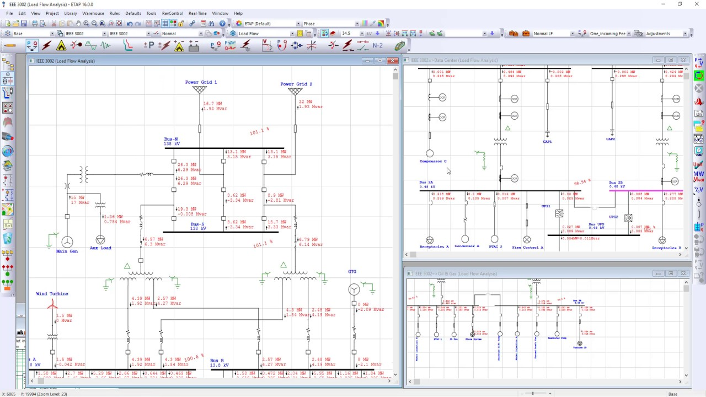

Agribusiness · Australia · New
Grain network: arc flash program across 38 sites
Network-wide IEEE 1584-2018 arc flash refresh for an Australian grain-handling network (anonymized) — 38 receival and port sites, ~520 buses, staged around the harvest window. The client's electricians collected field data with our structured packs; studies, labels, and a ranked remediation register followed overnight.
38Sites in 9 months
0Interruptions
∼75%Fewer buses >8 cal/cm²